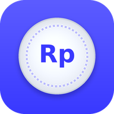

For the group owner only. Everything here runs in your browser; your token is never sent anywhere except GitHub.
Use the private data repo and the fine-grained token you made in the README (Contents: Read and write, only this repo).
Friends type this once on each device to unlock the ledger. Use at least four random words, e.g. kopi senja ojek pelangi. Anyone who knows it can read and edit the ledger, so share it privately (not in a public post).
assets/config.jsOn GitHub, open assets/config.js in the public app repo, click the pencil, replace everything with the text below, and commit. Then open the site and unlock with the passphrase.
Changing the passphrase or renewing the token later: run this page again and replace config.js. Everyone then unlocks once more with the new passphrase.